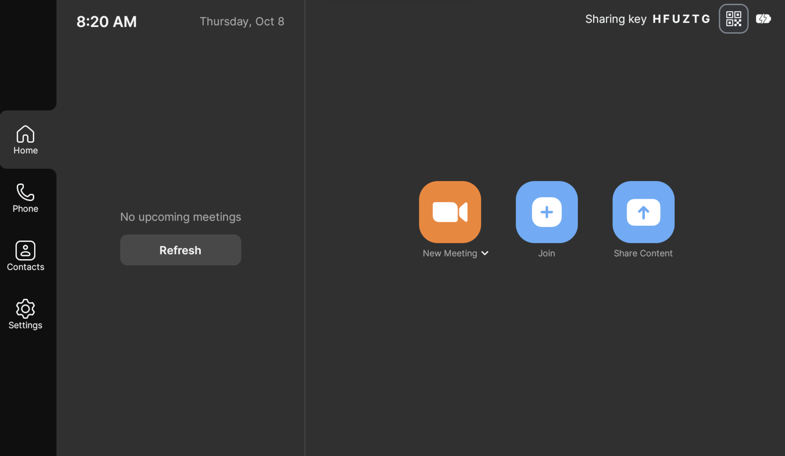

Start the meeting
- Select a scheduled meeting, New Meeting, or Join.
- Follow the prompts shown on the Tap.
- The Rally Bar normally provides the room camera, microphone, and speakers.
Use this guide in conference rooms with a Logitech Tap controller and Rally Bar. For most local presentations, connect the provided cable and share your laptop.
Use the provided USB-C cable. It carries your laptop’s video into the room through an HDMI connection.

Use the Zoom controls on the Tap to mute or unmute, start or stop video, share content, and adjust the camera when those controls are available.
Select End and confirm that you want to end or leave the meeting. Disconnect your laptop before leaving.
Search the room directory to open the guide that matches that room’s controls and connections.